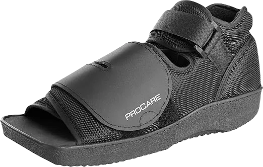
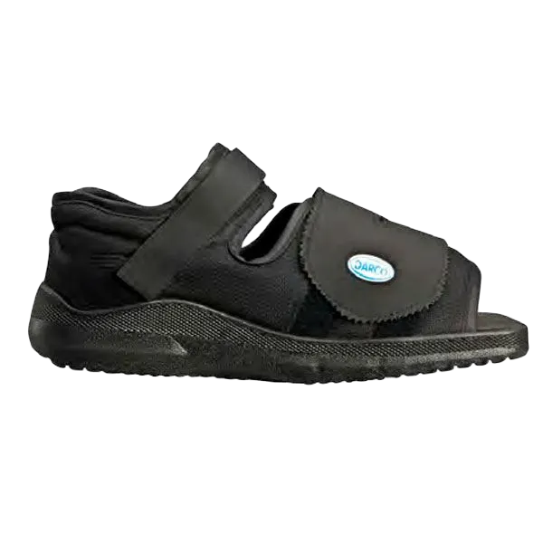
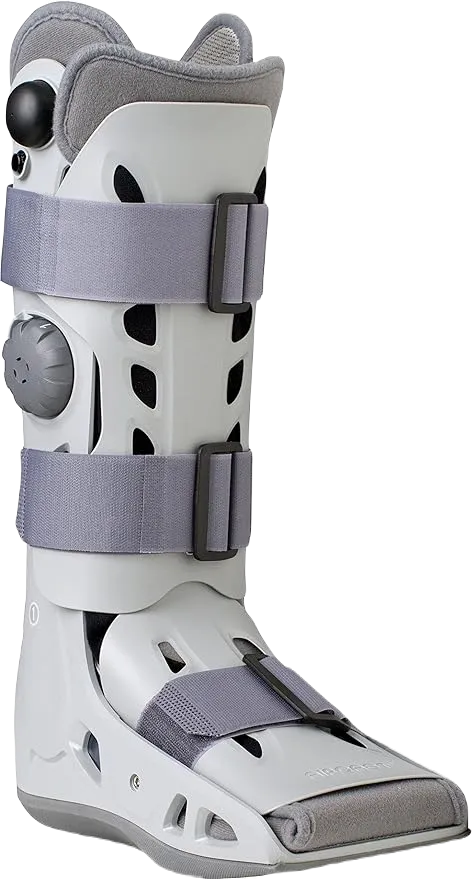
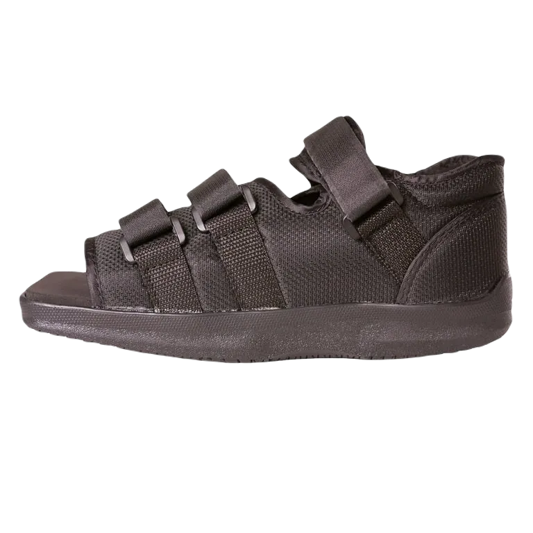

5 Best Shoe After Calcaneal Fracture Reviewed & Rated 2024
Before we dive deeper into the discussion, let's first explain what a calcaneal fracture is. A calcaneal fracture refers to a break in the calcaneus, which is the heel bone. This large bone forms the foundation of the rear part of the foot and is connected to both the talus and the cuboid bone.
The talus is responsible for forming the lower ankle joint, while the cuboid connects the ankle to the foot. The calcaneus itself consists of spongy bone tissue that is encased in a hard outer shell, providing both strength and flexibility.
-
#1
Procare Squared Toe Post-Op Shoe
At the top of the list are the Pro Care Squared Toe Post-Op Shoes, which are highly sought after by individuals recovering from calcaneal surgery. These shoes are designed to provide exceptional support, facilitating the natural healing process. Their universal design allows them to be worn on either foot, ensuring versatility during recovery.
One of the standout features of these shoes is their ability to keep the surgical dressing dry, preventing moisture from compromising the healing area. The square toe design is padded for comfort, making walking easier, while generous cushioning around the toe area offers additional protection.
Additionally, these shoes come with an adjustable ankle strap for a secure fit and a removable insole, simplifying the cleaning process. This feature makes it convenient to wear them outdoors, even on dusty roads, without any worries. -
#2
Darco Med-Surg Post-Operative
In second place is the highly sought-after Darco Med-Surg Post-Operative Shoe, specifically crafted for those recovering from a calcaneal fracture. This shoe is ideal for patients seeking comprehensive rigid support around the ankle. Its design includes a forefoot closure that offers maximum stability during light walking, effectively reducing friction at the heel while keeping the foot securely in place on the sole.
A notable feature of this shoe is its square-shaped toe box, which provides ample room for the toes, ensuring that patients remain comfortable throughout their recovery. Additionally, the shoe incorporates Meta Shank protection technology, which offers extra support to injured toes, facilitating a smoother healing process.
The Darco Med-Surg shoe not only aids in recovery but also delivers comfort at every stage. It can even be worn after bandages have been removed, making it a versatile option for ongoing support -
#3
Aircast AirSelect Walker Brace
This remarkable post-surgery shoe is highly recommended for those seeking relief after a calcaneal fracture. Its universal design allows it to be worn on either foot, and the open design makes it easy to slip on quickly, even in a hurry. Made from durable plastic materials, it provides excellent stability on various surfaces. The best part is that this comfort shoe is available in three different styles and sizes, ensuring optimal comfort and protection. These styles include:
Short, Standard, and Elite. The short version is designed to alleviate symptoms associated with hindfoot, forefoot, and midfoot injuries, providing maximum comfort for patients. It features a pre-inflated front panel and air-adjustable cells, allowing for breathability and reducing discomfort.The standard version, suitable for female doctors, offers comfort and support for the injured foot while aiding in relief from ankle sprains and other lower leg injuries.Moving on to the Elite version, it shares the same features and comfort as the standard model but includes additional benefits, particularly in reducing swelling in the injured foot.
All three versions of this post-surgery comfort shoe are lightweight and breathable, with the primary goal of providing comfort and protection against shocks while ensuring the foot remains well-supported. -
#4
BraceAbility Short Broken Toe
This shoe features an open-toe design and a wide toe bed, providing exceptional comfort with a shock-absorbing liner. Enhanced with extra soft pads, it ensures maximum comfort for the foot during the healing process. The design allows ample space for bandages and plasters, preventing any discomfort for the patient.
Additionally, the shoe boasts a low-profile bottom and a gait-enhancing design, complemented by medical-grade straps for a secure fit. Constructed with a durable plastic polymer shell, it offers vital support to both the ankle and the sides of the foot.
The medical-grade Velcro straps are significantly stronger than standard Velcro, providing enhanced stability and support throughout the recovery process following a calcaneus fracture. -
#5
Mars Wellness Premium Squared

Last on the list is an outstanding shoe for post-calcaneal surgery recovery. Its universal design allows it to be worn on either the left or right foot, depending on which one is injured. This shoe features a high ankle strap specifically designed to maintain the foot in the correct position, making it one of the top choices for those recovering from calcaneal surgery. It plays a vital role in facilitating the healing process of the foot.
Equipped with a rigid rocker sole, this shoe offers stability and a traction sole that enhances grip on various surfaces, helping to prevent slips and falls.
Like other post-surgery footwear, it incorporates adjustable Velcro straps at the forefoot, midfoot, and ankle, providing maximum security during walking. Additionally, the interior is well-cushioned to ensure that the injured foot remains comfortable throughout the recovery journey.